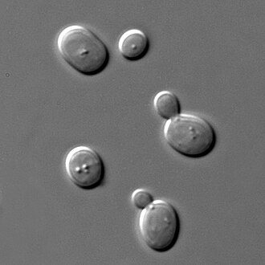

Unlock minerals from rock
How this trait became 2 genes to order.
All 37 genes · How the search works · Every trait
1. What this trait needs done
A trait is rarely one thing. Each job below needs its own protein.
| Job | What we search for | Why it is a separate job |
|---|---|---|
| Unlock phosphorus from solid rock | phytase, alkaline phosphatase,
acid phosphatase |
phosphate in Mars regolith is locked in mineral form |
| Pull iron out of the dirt | ferric reductase, siderophore synthetase,
ferric uptake |
iron is abundant on Mars but locked as rust, which nothing can absorb. Two ways out: reduce it to a soluble form, or make a siderophore that grabs it. Reduction leads the list because every siderophore synthetase in the database comes from an opportunistic pathogen, so that route left the job empty. The term must say SYNTHETASE or REDUCTASE: plain ‘siderophore’ matches receptors and transporters that handle one somebody else made, and one of those won the job until the term was narrowed |
Term source: UniProt keyword search ‘phosphate transport’
Term source: UniProt KW Iron transport (bare ‘iron’ returns photosystems)
Term source: added by hand – what actually frees minerals from rock
2. What the search returned
| Search term | Proteins found |
|---|---|
acid phosphatase |
101 |
alkaline phosphatase |
36 |
phytase |
20 |
ferric reductase |
12 |
ferric uptake |
10 |
siderophore synthetase |
4 |
167 different proteins once duplicates are removed.
3. What was thrown out
| Rule it broke | How many |
|---|---|
| comes from a germ that makes people ill | 41 |
| name contains “venom” | 1 |
| too long to print affordably | 1 |
124 survived.
All 43 rejected proteins
| Protein | From | Found by | Rejected because |
|---|---|---|---|
| Phytase A | Aspergillus fumigatus | phytase, acid phosphatase | comes from a germ that makes people ill |
| Phytase A | Emericella nidulans | phytase, acid phosphatase | comes from a germ that makes people ill |
| Phytase A | Aspergillus terreus | phytase, acid phosphatase | comes from a germ that makes people ill |
| Phytase PHO112 | Candida albicans | phytase, acid phosphatase | comes from a germ that makes people ill |
| Phytase A | Aspergillus terreus | phytase, acid phosphatase | comes from a germ that makes people ill |
| Phytase A | Aspergillus niger | phytase, acid phosphatase | comes from a germ that makes people ill |
| Phytase A | Aspergillus terreus | phytase, acid phosphatase | comes from a germ that makes people ill |
| 3-phytase B | Aspergillus awamori | phytase, acid phosphatase | comes from a germ that makes people ill |
| Phytase A | Aspergillus oryzae | phytase, acid phosphatase | comes from a germ that makes people ill |
| Phytase A | Aspergillus awamori | phytase, acid phosphatase | comes from a germ that makes people ill |
| Phytase A | Arthroderma benhamiae | phytase, acid phosphatase | comes from a germ that makes people ill |
| 3-phytase B | Aspergillus niger | phytase | comes from a germ that makes people ill |
| Alkaline phosphatase L | Pseudomonas aeruginosa | alkaline phosphatase | comes from a germ that makes people ill |
| Alkaline phosphatase H | Pseudomonas aeruginosa | alkaline phosphatase | comes from a germ that makes people ill |
| Alkaline phosphatase H | Pseudomonas aeruginosa | alkaline phosphatase | comes from a germ that makes people ill |
| Alkaline phosphatase L | Pseudomonas aeruginosa | alkaline phosphatase | comes from a germ that makes people ill |
| Alkaline phosphatase-like protein BrxZ | Escherichia coli O9:H4 | alkaline phosphatase | comes from a germ that makes people ill |
| Acid phosphatase | Aspergillus fumigatus | acid phosphatase | comes from a germ that makes people ill |
| Class B acid phosphatase | Salmonella typhimurium | acid phosphatase | comes from a germ that makes people ill |
| Phosphatidylinositol-3-phosphatase | Mycobacterium tuberculosis | acid phosphatase | comes from a germ that makes people ill |
| Class B acid phosphatase | Salmonella typhimurium | acid phosphatase | comes from a germ that makes people ill |
| Glideosome-associated protein 50 | Plasmodium falciparum | acid phosphatase | comes from a germ that makes people ill |
| Acid phosphatase | Mycobacterium tuberculosis | acid phosphatase | comes from a germ that makes people ill |
| Acid phosphatase | Aspergillus ficuum | acid phosphatase | comes from a germ that makes people ill |
| Class B acid phosphatase | Salmonella typhi | acid phosphatase | comes from a germ that makes people ill |
| Class B acid phosphatase | Haemophilus influenzae | acid phosphatase | comes from a germ that makes people ill |
| Acid phosphatase | Aspergillus niger | acid phosphatase | comes from a germ that makes people ill |
| Ferric aerobactin reductase IutB | Vibrio vulnificus | ferric reductase | comes from a germ that makes people ill |
| Ferric vulnibactin reductase VuuB | Vibrio vulnificus | ferric reductase | comes from a germ that makes people ill |
| Ferric vibriobactin reductase ViuB | Vibrio cholerae serotype O | ferric reductase | comes from a germ that makes people ill |
| Ferric reductase SjCytb561 | Schistosoma japonicum | ferric reductase | comes from a germ that makes people ill |
| Nonribosomal peptide synthetase sidE | Aspergillus fumigatus | siderophore synthetase | comes from a germ that makes people ill |
| NRPS-independent siderophore synthetase rfs | Rhizopus delemar | siderophore synthetase | comes from a germ that makes people ill |
| NRPS-independent siderophore synthetase-like protein | Aspergillus thermomutatus | siderophore synthetase | comes from a germ that makes people ill |
| Ferric uptake regulation protein | Pseudomonas aeruginosa | ferric uptake | comes from a germ that makes people ill |
| Suppressor of ferric uptake 1 | Candida albicans | ferric uptake | comes from a germ that makes people ill |
| Ferric uptake regulation protein | Campylobacter jejuni subsp | ferric uptake | comes from a germ that makes people ill |
| Ferric uptake regulation protein | Vibrio anguillarum | ferric uptake | comes from a germ that makes people ill |
| Ferric uptake regulation protein | Helicobacter pylori | ferric uptake | comes from a germ that makes people ill |
| Ferric uptake regulation protein | Vibrio cholerae serotype O | ferric uptake | comes from a germ that makes people ill |
| Ferric uptake regulation protein | Klebsiella pneumoniae | ferric uptake | comes from a germ that makes people ill |
| Venom acid phosphatase Acph-1 | Apis mellifera | acid phosphatase | name contains “venom” – it BLOCKS this trait instead of doing it |
| Nonribosomal peptide synthetase NPS2 | Ceriporiopsis subvermispor | siderophore synthetase | too long to print affordably (2464 letters, cap 2000) |
4. How the winner is picked
From the survivors, one protein per job. Ties break in this order:
- nothing rules it out
- the term it matched sits higher in the job’s list
- not an over-studied lab organism
- better curation score
- shorter, because you pay per letter of DNA
5. The 2 genes to order
Ferric reductase transmembrane component 3
- Job: Pull iron out of the dirt
- From:

Saccharomyces cerevisiae - Size: 711 amino acids → 2136 letters of DNA
- UniProt: Q08905
Sequences
Protein:
MYWVLLCGSILLCCLSGASASPAKTKMYGKLPLVLTDACMGVLGEVTWEYSSDDLYSSPACTYEPALQSMLYCIYESLNEKGYSNRTFEKTFAAIKEDCAYYTDNLQNMTNADFYNMLNNGTTYIIQYSEGSANLTYPIEMDAQVRENYYYSYHGFYANYDIGHTYGGIICAYFVGVMILASILHYLSYTPFKTALFKQRLVRYVRRYLTIPTIWGKHASSFSYLKIFTGFLPTRSEGVIILGYLVLHTVFLAYGYQYDPYNLIFDSRREQIARYVADRSGVLAFAHFPLIALFAGRNNFLEFISGVKYTSFIMFHKWLGRMMFLDAVIHGAAYTSYSVFYKDWAASKEETYWQFGVAALCIVGVMVFFSLAMFRKFFYEAFLFLHIVLGALFFYTCWEHVVELSGIEWIYAAIAIWTIDRLIRIVRVSYFGFPKASLQLVGDDIIRVTVKRPVRLWKAKPGQYVFVSFLHHLYFWQSHPFTVLDSIIKDGELTIILKEKKGVTKLVKKYVCCNGGKASMRLAIEGPYGSSSPVNNYDNVLLLTGGTGLPGPIAHAIKLGKTSAATGKQFIKLVIAVRGFNVLEAYKPELMCLEDLNVQLHIYNTMEVPALTPNDSLEISQQDEKADGKGVVMATTLEQSPNPVEFDGTVFHHGRPNVEKLLHEVGDLNGSLAVVCCGPPVFVDEVRDQTANLVLEKPAKAIEYFEEYQSWDNA to order:
ATGTACTGGGTCTTGCTCTGTGGTTCTATCCTCCTCTGTTGCTTGTCCGGTGCTTCTGCTTCTCCTGCTAAAACTAAGATGTACGGCAAGCTCCCTCTCGTCTTGACCGATGCTTGCATGGGTGTTTTAGGTGAAGTTACCTGGGAGTACTCCTCTGACGACTTGTACTCCTCCCCTGCTTGTACTTATGAACCCGCTTTACAGTCCATGCTCTACTGTATCTACGAGTCCCTCAACGAGAAGGGCTACTCTAACCGTACCTTCGAAAAGACTTTCGCTGCCATCAAGGAGGACTGCGCTTATTACACCGACAACTTGCAAAACATGACCAACGCCGACTTCTACAACATGCTCAACAACGGCACCACCTATATCATCCAGTACTCCGAGGGTTCTGCTAACTTGACTTACCCCATCGAGATGGATGCTCAAGTTCGCGAGAACTACTACTACTCCTACCACGGTTTCTACGCCAACTACGACATCGGCCATACTTACGGTGGTATTATCTGCGCTTACTTCGTCGGTGTCATGATCCTCGCTTCTATCCTCCACTATTTGTCCTACACCCCTTTCAAGACCGCTCTCTTCAAGCAGCGTCTCGTTAGATATGTCAGACGCTACTTGACTATCCCCACCATCTGGGGTAAGCACGCTTCTTCTTTTTCCTACCTCAAGATCTTCACCGGCTTCCTCCCTACCCGTTCTGAAGGTGTTATTATCCTCGGTTATTTGGTCCTCCACACCGTCTTCCTCGCCTACGGTTATCAATACGACCCTTATAACCTCATCTTCGACTCCCGCCGTGAGCAGATCGCTAGATATGTCGCTGATAGATCTGGTGTTTTAGCCTTCGCCCACTTCCCCTTGATCGCTTTGTTCGCTGGTAGAAACAATTTCCTCGAGTTCATCTCCGGCGTCAAGTACACCTCCTTCATCATGTTCCATAAGTGGCTCGGTAGAATGATGTTCCTCGACGCCGTCATCCATGGTGCTGCTTATACTTCCTACTCTGTTTTCTACAAGGACTGGGCCGCCTCTAAGGAGGAGACTTATTGGCAATTCGGTGTTGCTGCTTTATGCATCGTCGGCGTCATGGTCTTCTTTTCCTTGGCTATGTTCCGCAAGTTTTTCTACGAGGCCTTCCTCTTCCTCCATATCGTCCTCGGTGCTTTGTTCTTTTACACCTGCTGGGAGCATGTCGTCGAATTGTCCGGTATCGAGTGGATTTATGCTGCTATCGCCATCTGGACCATCGATAGACTCATCCGCATCGTCAGAGTTTCTTACTTCGGCTTCCCTAAGGCCTCTTTGCAACTCGTCGGTGATGACATTATCAGAGTCACCGTCAAGCGTCCTGTTCGTTTGTGGAAGGCCAAGCCTGGTCAATATGTTTTCGTCTCCTTCCTCCACCATTTGTACTTCTGGCAGTCCCACCCTTTCACTGTTTTGGACTCCATCATCAAGGACGGTGAACTCACTATCATCCTCAAGGAGAAGAAGGGCGTCACTAAGCTCGTCAAGAAGTACGTCTGTTGCAACGGTGGTAAAGCTTCCATGCGTCTCGCTATCGAAGGTCCTTATGGTTCTTCCTCCCCTGTTAATAACTACGACAACGTCCTCCTCCTCACCGGTGGTACTGGTTTGCCTGGTCCTATTGCTCATGCTATTAAGCTCGGTAAGACCTCCGCTGCTACTGGTAAGCAGTTCATCAAGCTCGTTATCGCTGTTAGAGGTTTCAACGTCCTCGAGGCCTACAAGCCTGAACTCATGTGTCTCGAAGATTTGAACGTCCAGCTCCACATCTACAACACCATGGAGGTCCCTGCTTTGACTCCTAATGACTCCCTCGAAATCTCTCAACAGGACGAGAAGGCCGATGGTAAGGGTGTTGTTATGGCCACTACTTTGGAACAGTCCCCTAACCCCGTTGAATTCGACGGTACTGTTTTCCACCATGGTAGACCTAACGTCGAGAAGCTCTTGCACGAGGTTGGTGATTTGAACGGTTCTCTCGCTGTTGTCTGTTGCGGTCCTCCTGTTTTCGTCGATGAAGTTAGAGACCAGACCGCTAATTTGGTCCTCGAGAAGCCTGCTAAGGCTATCGAATACTTCGAGGAGTACCAATCCTGGTAAPhytase A
- Job: Unlock phosphorus from solid rock
- From: Penicillium oxalicum
- Size: 461 amino acids → 1386 letters of DNA
- UniProt: Q6YNE9
Sequences
Protein:
MFDIALRSGPARGGVSHRVRTCDTVDGGYQCFPRLSHRWGQYSPYFSLANTGLPSEVPEKCELTFVQVLSRHGARYPTASKSKKYKSLIQAIQANATAYNGQSVFLRAYNYTLGSEDLTSFGEHQMINSGIKFYQRYAALTRDHVPFIRSSDSSRVVASGQLFIQGYEQSKAQDCDADHSQDHAAINVLISEAPGANNTLNHNTCAAFEADKLGDQVSAKYTALIAPPMAQRLHHDLPGVTLTDDQVIYLMDMCAYDTVATTPGATSLSPFCALFTDTEWSQYNYLQSLGKYYGYGAGNPLGPTQGVGFINELIARMTHSPVHDHTTSNRTLDAPGADSFPTNRTLYADFTHDNGMIPIFFALGLYNGSDPLPHDRIVPATQADGYSAAWAVPFAARAYIEMMQCGRETEPLVRVLINDRVAPLKGCNVDQLGRCKRSDFVNALSFAQDGGDWAKCGVSSKDNA to order:
ATGTTCGACATCGCTCTCCGTTCTGGTCCTGCTAGAGGTGGTGTTTCTCATAGAGTTAGAACCTGCGACACTGTCGACGGTGGTTACCAGTGCTTTCCTAGATTGTCTCATAGATGGGGTCAGTACTCCCCCTACTTCTCCCTCGCTAATACTGGTTTGCCTTCTGAAGTCCCTGAAAAGTGCGAGTTGACCTTCGTCCAAGTCTTGTCCAGACACGGTGCTAGATATCCTACCGCTTCTAAGTCCAAGAAGTACAAGTCCCTCATCCAGGCCATCCAAGCTAACGCTACTGCTTACAACGGTCAATCTGTCTTCCTCCGTGCTTACAACTACACCCTCGGTTCTGAAGACCTCACTTCTTTCGGTGAGCACCAAATGATCAACTCCGGCATCAAGTTCTACCAGCGTTACGCTGCTCTCACCAGAGATCATGTTCCTTTCATCCGTTCTTCCGACTCTTCCCGTGTCGTTGCTTCCGGTCAATTATTCATCCAGGGTTATGAGCAGTCTAAGGCCCAGGACTGTGACGCCGATCATTCTCAAGATCATGCTGCTATTAACGTCCTCATCTCCGAGGCCCCCGGTGCTAATAATACTTTGAACCACAATACCTGCGCTGCTTTCGAGGCCGACAAGCTCGGTGATCAAGTTTCTGCTAAATATACCGCCTTGATCGCCCCCCCTATGGCTCAGAGATTGCATCATGATTTACCTGGTGTTACTCTCACCGACGACCAGGTCATCTACCTCATGGACATGTGTGCTTACGATACTGTTGCCACCACCCCTGGTGCTACTTCTTTGTCTCCTTTCTGTGCTTTATTCACCGACACCGAGTGGTCCCAGTACAACTACCTCCAATCTCTCGGTAAATATTACGGCTACGGCGCTGGCAACCCTTTAGGTCCTACTCAAGGTGTTGGTTTTATTAACGAGCTCATCGCCCGCATGACCCACTCTCCTGTTCACGATCATACTACTTCTAACAGAACCCTCGACGCTCCCGGTGCTGATTCTTTCCCTACTAATAGAACTTTGTACGCCGACTTCACCCACGACAACGGCATGATCCCTATCTTTTTCGCTTTAGGTCTCTACAACGGCTCCGACCCTCTCCCTCATGATAGAATTGTCCCTGCTACTCAAGCTGATGGTTACTCCGCCGCTTGGGCTGTTCCTTTTGCTGCTAGAGCTTATATCGAAATGATGCAGTGCGGCCGCGAGACTGAACCTTTGGTTCGTGTTTTAATCAACGATCGTGTTGCCCCCCTCAAGGGCTGTAACGTCGATCAGTTAGGTAGATGTAAACGTTCTGACTTCGTCAACGCCCTCTCCTTCGCCCAAGATGGTGGTGATTGGGCTAAATGTGGTGTTTCTTCCAAGTAA6. The 122 we did not order
These passed every rule. Each job takes one protein, so the rest simply were not needed, and every extra gene costs the host energy.
2 of them were ruled out for a different reason, and only those say why.
See them all
| Protein | From | Length | Found by | Ruled out because |
|---|---|---|---|---|
| Lipid phosphate phosphatase epsilon 1, chloroplast | Arabidopsis thaliana | 279 | acid phosphatase | needs a compartment the host does not have |
| Lipid phosphate phosphatase epsilon 2, chloroplast | Arabidopsis thaliana | 286 | acid phosphatase | needs a compartment the host does not have |
| 2-keto-3-deoxy-D-glycero-D-galacto-9-phosphonononi | Bacteroides thetaiotaomi | 164 | acid phosphatase | |
| 2-phosphoxylose phosphatase 1 | Homo sapiens | 480 | acid phosphatase | |
| 3-phytase | Bacillus subtilis | 383 | phytase | |
| 3-phytase | Bacillus sp. | 383 | phytase | |
| 3-phytase | Bacillus subtilis | 382 | phytase | |
| Acid phosphatase | Schizosaccharomyces pomb | 453 | acid phosphatase | |
| Acid phosphatase PHO11 | Saccharomyces cerevisiae | 467 | acid phosphatase | |
| Acid phosphatase PHO12 | Saccharomyces cerevisiae | 467 | acid phosphatase | |
| Acid phosphatase type 7 | Homo sapiens | 438 | acid phosphatase | |
| Alkaline phosphatase | Escherichia coli | 471 | alkaline phosphatase | |
| Alkaline phosphatase | Gadus morhua | 477 | alkaline phosphatase | |
| Alkaline phosphatase | Lysobacter enzymogenes | 539 | alkaline phosphatase | |
| Alkaline phosphatase 3 | Bacillus subtilis | 462 | alkaline phosphatase | |
| Alkaline phosphatase 4 | Bacillus subtilis | 461 | alkaline phosphatase | |
| Alkaline phosphatase D | Bacillus subtilis | 583 | alkaline phosphatase | |
| Alkaline phosphatase PafA | Elizabethkingia meningos | 546 | alkaline phosphatase | |
| Alkaline phosphatase PhoD | Zymomonas mobilis subsp. | 576 | alkaline phosphatase | |
| Alkaline phosphatase PhoK | Sphingomonas sp | 559 | alkaline phosphatase | |
| Alkaline phosphatase PhoV | Synechococcus elongatus | 550 | alkaline phosphatase | |
| Alkaline phosphatase synthesis sensor protein PhoR | Bacillus subtilis | 579 | alkaline phosphatase | |
| Alkaline phosphatase synthesis transcriptional reg | Bacillus subtilis | 240 | alkaline phosphatase | |
| Alkaline phosphatase synthesis transcriptional reg | Synechococcus elongatus | 257 | alkaline phosphatase | |
| Alkaline phosphatase, germ cell type | Homo sapiens | 532 | alkaline phosphatase | |
| Alkaline phosphatase, placental type | Homo sapiens | 535 | alkaline phosphatase | |
| Alkaline phosphatase, tissue-nonspecific isozyme | Homo sapiens | 524 | alkaline phosphatase | |
| Alkaline phosphatase, tissue-nonspecific isozyme | Mus musculus | 524 | alkaline phosphatase | |
| Alkaline phosphatase, tissue-nonspecific isozyme | Rattus norvegicus | 524 | alkaline phosphatase | |
| Alkaline phosphatase, tissue-nonspecific isozyme | Bos taurus | 524 | alkaline phosphatase | |
| Alkaline phosphatase, tissue-nonspecific isozyme | Felis catus | 524 | alkaline phosphatase | |
| Alkaline phosphatase, tissue-nonspecific isozyme | Gallus gallus | 519 | alkaline phosphatase | |
| Alkaline phosphatase-like protein PglZ | Streptomyces coelicolor | 974 | alkaline phosphatase | |
| Alkaline phosphatase-like protein PglZ | Bacillus cereus | 854 | alkaline phosphatase | |
| Bifunctional purple acid phosphatase 26 [Includes: | Arabidopsis thaliana | 475 | acid phosphatase | |
| Broad-range acid phosphatase DET1 | Saccharomyces cerevisiae | 334 | acid phosphatase | |
| Class B acid phosphatase | Escherichia coli | 237 | acid phosphatase | |
| Class B acid phosphatase | Morganella morganii | 236 | acid phosphatase | |
| Constitutive acid phosphatase | Saccharomyces cerevisiae | 467 | acid phosphatase | |
| Fe(3+)-Zn(2+) purple acid phosphatase | Phaseolus vulgaris | 459 | acid phosphatase | |
| Ferric reductase 1 | Homo sapiens | 592 | ferric reductase | |
| Ferric reductase 1 | Drosophila melanogaster | 647 | ferric reductase | |
| Ferric reductase 1 | Mus musculus | 592 | ferric reductase | |
| Ferric reductase transmembrane component 1 | Schizosaccharomyces pomb | 564 | ferric reductase | |
| Ferric reductase transmembrane component 6 | Saccharomyces cerevisiae | 712 | ferric reductase | |
| Ferric uptake regulation protein | Escherichia coli | 148 | ferric uptake | |
| Ferric uptake regulation protein | Bacillus subtilis | 149 | ferric uptake | |
| Ferric uptake regulation protein | Rhizobium leguminosarum | 142 | ferric uptake | |
| Inactive phospholipid phosphatase 7 | Mus musculus | 271 | acid phosphatase | |
| Inactive phospholipid phosphatase 7 | Homo sapiens | 271 | acid phosphatase | |
| Inositol hexakisphosphate and diphosphoinositol-pe | Homo sapiens | 1433 | acid phosphatase | |
| Inositol hexakisphosphate and diphosphoinositol-pe | Mus musculus | 1436 | acid phosphatase | |
| Inositol hexakisphosphate and diphosphoinositol-pe | Rattus norvegicus | 1434 | acid phosphatase | |
| Inositol hexakisphosphate and diphosphoinositol-pe | Homo sapiens | 1243 | acid phosphatase | |
| Inositol hexakisphosphate and diphosphoinositol-pe | Mus musculus | 1129 | acid phosphatase | |
| Intestinal acid phosphatase | Caenorhabditis elegans | 449 | acid phosphatase | |
| Intestinal-type alkaline phosphatase | Homo sapiens | 528 | alkaline phosphatase | |
| Intestinal-type alkaline phosphatase | Bos taurus | 533 | alkaline phosphatase | |
| Intestinal-type alkaline phosphatase 1 | Rattus norvegicus | 540 | alkaline phosphatase | |
| Intestinal-type alkaline phosphatase 2 | Rattus norvegicus | 551 | alkaline phosphatase | |
| Lipid phosphate phosphatase gamma | Arabidopsis thaliana | 226 | acid phosphatase | |
| Low molecular weight phosphotyrosine protein phosp | Homo sapiens | 158 | acid phosphatase | |
| Low molecular weight phosphotyrosine protein phosp | Saccharomyces cerevisiae | 161 | acid phosphatase | |
| Low molecular weight phosphotyrosine protein phosp | Rattus norvegicus | 158 | acid phosphatase | |
| Low molecular weight phosphotyrosine protein phosp | Bos taurus | 158 | acid phosphatase | |
| Low molecular weight phosphotyrosine protein phosp | Mus musculus | 158 | acid phosphatase | |
| Low molecular weight phosphotyrosine protein phosp | Sus scrofa | 158 | acid phosphatase | |
| Low molecular weight phosphotyrosine protein phosp | Drosophila melanogaster | 155 | acid phosphatase | |
| Low molecular weight phosphotyrosine protein phosp | Drosophila melanogaster | 164 | acid phosphatase | |
| Lysophosphatidic acid phosphatase type 6 | Homo sapiens | 428 | acid phosphatase | |
| Lysophosphatidic acid phosphatase type 6 | Mus musculus | 418 | acid phosphatase | |
| Lysophosphatidic acid phosphatase type 6 | Bos taurus | 429 | acid phosphatase | |
| Lysosomal acid phosphatase | Homo sapiens | 423 | acid phosphatase | |
| Lysosomal acid phosphatase | Mus musculus | 423 | acid phosphatase | |
| Lysosomal acid phosphatase | Rattus norvegicus | 423 | acid phosphatase | |
| Major phosphate-irrepressible acid phosphatase | Morganella morganii | 249 | acid phosphatase | |
| Membrane-bound alkaline phosphatase | Bombyx mori | 550 | alkaline phosphatase | |
| Multifunctional alkaline phosphatase superfamily p | Trinickia caryophylli | 514 | alkaline phosphatase | |
| Multifunctional alkaline phosphatase superfamily p | Rhizobium johnstonii | 514 | alkaline phosphatase | |
| Phosphate-repressible acid phosphatase | Penicillium chrysogenum | 412 | acid phosphatase | |
| Phospholipid phosphatase 1 | Homo sapiens | 284 | acid phosphatase | |
| Phospholipid phosphatase 1 | Rattus norvegicus | 282 | acid phosphatase | |
| Phospholipid phosphatase 1 | Mus musculus | 283 | acid phosphatase | |
| Phospholipid phosphatase 1 | Cavia porcellus | 285 | acid phosphatase | |
| Phospholipid phosphatase 1 | Sus scrofa | 285 | acid phosphatase | |
| Phospholipid phosphatase 2 | Homo sapiens | 288 | acid phosphatase | |
| Phospholipid phosphatase 2 | Mus musculus | 276 | acid phosphatase | |
| Phospholipid phosphatase 3 | Homo sapiens | 311 | acid phosphatase | |
| Phospholipid phosphatase 3 | Mus musculus | 312 | acid phosphatase | |
| Phospholipid phosphatase 3 | Rattus norvegicus | 312 | acid phosphatase | |
| Phospholipid phosphatase 4 | Homo sapiens | 271 | acid phosphatase | |
| Phospholipid phosphatase 5 | Homo sapiens | 264 | acid phosphatase | |
| Phospholipid phosphatase-related protein type 4 | Homo sapiens | 763 | acid phosphatase | |
| Phospholipid phosphatase-related protein type 4 | Mus musculus | 766 | acid phosphatase | |
| Phospholipid phosphatase-related protein type 4 | Rattus norvegicus | 766 | acid phosphatase | |
| Phospholipid phosphatase-related protein type 5 | Homo sapiens | 321 | acid phosphatase | |
| Phytase A | Neurospora crassa | 509 | phytase, acid phosphatase | |
| Phytase A | Thermothelomyces thermop | 487 | phytase, acid phosphatase | |
| Phytase AppA | Escherichia coli | 432 | phytase, acid phosphatase | |
| Polyisoprenoid diphosphate/phosphate phosphohydrol | Homo sapiens | 295 | acid phosphatase | |
| Probable ferric reductase transmembrane component | Saccharomyces cerevisiae | 686 | ferric reductase | |
| Prostatic acid phosphatase | Homo sapiens | 386 | acid phosphatase | |
| Prostatic acid phosphatase | Mus musculus | 381 | acid phosphatase | |
| Prostatic acid phosphatase | Rattus norvegicus | 381 | acid phosphatase | |
| Protein DETOXIFICATION 43 | Arabidopsis thaliana | 526 | ferric reductase | |
| Purple acid phosphatase | Glycine max | 464 | acid phosphatase | |
| Purple acid phosphatase 1 | Ipomoea batatas | 473 | acid phosphatase | |
| Purple acid phosphatase 15 | Arabidopsis thaliana | 532 | phytase, acid phosphatase | |
| Purple acid phosphatase 2 | Ipomoea batatas | 465 | acid phosphatase | |
| Purple acid phosphatase 23 | Arabidopsis thaliana | 458 | acid phosphatase | |
| Putative acid phosphatase 1 | Caenorhabditis elegans | 426 | acid phosphatase | |
| Putative acid phosphatase 5 | Caenorhabditis elegans | 422 | acid phosphatase | |
| Putative phosphatidate phosphatase | Drosophila melanogaster | 379 | acid phosphatase | |
| Repressible acid phosphatase | Saccharomyces cerevisiae | 467 | acid phosphatase | |
| Repressible alkaline phosphatase | Saccharomyces cerevisiae | 566 | alkaline phosphatase | |
| Tartrate-resistant acid phosphatase type 5 | Homo sapiens | 325 | acid phosphatase | |
| Tartrate-resistant acid phosphatase type 5 | Mus musculus | 327 | acid phosphatase | |
| Tartrate-resistant acid phosphatase type 5 | Rattus norvegicus | 327 | acid phosphatase | |
| Tartrate-resistant acid phosphatase type 5 | Sus scrofa | 340 | acid phosphatase | |
| Testicular acid phosphatase | Homo sapiens | 426 | acid phosphatase | |
| Testicular acid phosphatase | Mus musculus | 425 | acid phosphatase | |
| Thiamine-repressible acid phosphatase pho4 | Schizosaccharomyces pomb | 463 | acid phosphatase |